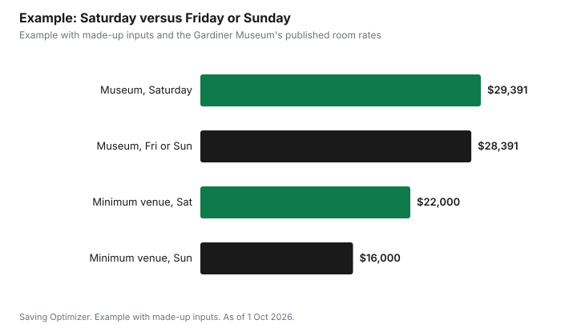

Weddings · Canada
Friday and Sunday Weddings: How Much You Save and What Guests Give Up

Moving a wedding from Saturday to Friday or Sunday usually lowers the room rate and often the minimum spend, but guests may need a day off work or a hotel night. One published example as of 1 October 2026: Toronto's Gardiner Museum charges $5,000 for its Terrace Room from Sunday to Friday and $6,000 on Saturday, a $1,000 difference before catering. At venues with a food and beverage minimum, the gap between days can be larger, so ask for each day's minimum in writing. A Sunday on a long weekend can give guests the next day off; in Ontario, only nine days are public holidays under employment law, and the August Civic Holiday is not one of them.
Key takeaways
- Published example: $5,000 Sunday to Friday versus $6,000 Saturday for the same room.
- Ask for each day's minimum spend; it can matter more than the room fee.
- Friday evenings may need guests to leave work early.
- Sunday weddings may need guests to take Monday off unless it is a holiday.
- Ontario has nine public holidays; Civic Holiday is not one under the Employment Standards Act.
- Example with made-up inputs: Saturday versus Friday versus Sunday.
How venues price by day
Saturday is the most requested day, so many venues charge the most for it. The Gardiner Museum's January 2026 package shows the pattern clearly: its Terrace Room rents for $5,000 from 4 p.m. to midnight on Sunday to Friday and $6,000 on Saturday, and $6,000 and $7,000 for the later 3 a.m. end. Hotels and banquet halls more often price through per-person packages and minimum spends that differ by day and season. These are rarely published, so request them for each day you are considering.
| Timeline | Sunday to Friday | Saturday |
|---|---|---|
| 4 p.m. to 12 a.m. | $5,000 | $6,000 |
| 4 p.m. to 3 a.m. | $6,000 | $7,000 |
Food and beverage minimums by day
A minimum spend is the least you must spend on food and drinks; if your guest count falls short, you pay the difference. A lower Friday or Sunday minimum lets a smaller wedding use a larger venue without paying for food nobody eats. Ask whether the minimum includes service charge and tax, what counts toward it (bar, late-night food, room fee), and whether it can be adjusted if your guest count drops.
Guest time off and travel
A Friday ceremony at 4 p.m. means many guests leave work early or take a vacation day. A Sunday wedding means a late night before Monday work, or a day off. For out-of-town guests, both can add a hotel night. Families with school-age children and guests in shift work may find one day easier than another.
Long weekends
A Sunday on a long weekend can give guests a holiday Monday, but rooms and flights cost more, and some guests have cottage or travel plans. In Ontario, the Employment Standards Act lists nine public holidays: New Year's Day, Family Day, Good Friday, Victoria Day, Canada Day, Labour Day, Thanksgiving Day, Christmas Day and Boxing Day. The August Civic Holiday is not on that list, so not every guest gets it off. Other provinces have their own holiday lists.
| Holiday | Possible Sunday-wedding weekend |
|---|---|
| Family Day | February long weekend |
| Good Friday | Easter weekend (Monday not a public holiday) |
| Victoria Day | May long weekend |
| Canada Day | Depends on the weekday |
| Labour Day | September long weekend |
| Thanksgiving Day | October long weekend |
Ask whether your venue charges Saturday rates for a Sunday before a holiday Monday, and get the answer in writing.
Guest costs to weigh
Every saving for the couple should be weighed against what it costs guests. A Friday wedding may cost an out-of-town guest an extra hotel night and a vacation day; a Sunday wedding may mean a long drive home late at night or a Monday off. If many guests travel, a Saturday with a smaller guest list may cost everyone less overall than a cheaper Friday. Telling guests the date early, arranging a hotel room block and choosing a ceremony time that works after a typical workday all reduce the burden. A Sunday afternoon ceremony with an early dinner lets guests get home at a reasonable hour.
If key family members work weekends or Friday shifts, ask them before you book. Their attendance is usually worth more than the price difference.
Vendor availability
Photographers, DJs and planners are also busiest on Saturdays, so Friday and Sunday dates can be easier to book. Some vendors offer lower rates on those days; others keep the same price. Ask each vendor directly and get any discount in the contract. A Friday ceremony may also mean vendors arrive from their weekday work and need setup time agreed in advance.
Weekday and daytime alternatives
A weekday or daytime wedding can cost less again: a brunch or lunch reception uses lighter food and fewer drinks, and venues may have lower day rates. The Gardiner's events cannot start before 4 p.m., so check each venue's earliest start. A small ceremony at a city hall on a weekday followed by a dinner is another option.
Questions to ask
- What are the room fee and minimum spend for Friday, Saturday and Sunday?
- Is a Sunday before a holiday Monday priced as a Saturday?
- What time can we start and must we end on each day?
- Do vendors charge the same rate on Fridays and Sundays?
- Are hotel room blocks cheaper on Sunday nights?
Example with made-up inputs
These numbers are an example with made-up inputs, apart from the Gardiner room rates. A couple plans 120 guests with catering and bar at a made-up $150 per person, plus the 15% landmark fee and 13% HST on catering: $23,391. On Saturday the room is $6,000, total $29,391. On Friday or Sunday it is $5,000, total $28,391. At a different, made-up venue with a $22,000 Saturday minimum and a $16,000 Sunday minimum, a smaller 90-guest wedding spending $15,000 on food would pay the $22,000 minimum on Saturday but only $16,000 on Sunday, a $6,000 saving.
| Scenario | Saturday | Friday or Sunday | Saving |
|---|---|---|---|
| Museum room plus catering, 120 guests | $29,391 | $28,391 | $1,000 |
| Venue minimum, 90 guests spending $15,000 | $22,000 | $16,000 | $6,000 |

Steps
- Ask each venue for room fees and minimums by day.
- Check guest travel and time off.
- Look at long weekends and holiday rules.
- Ask vendors for Friday and Sunday rates.
- Compare totals, not just room fees.
- Get any day-based discount in writing.
Common mistakes
- Assuming every guest gets a holiday Monday off.
- Comparing room fees but not minimums.
- Forgetting guest hotel costs for Sunday nights.
- Not confirming vendor rates for the chosen day.
- Choosing a Friday start time guests cannot reach.
Related: off-season weddings and venue types and costs.
Sources
- Gardiner Museum, Events Package, January 2026, gardinermuseum.on.ca, as of 1 Oct 2026.
- Government of Ontario, Your guide to the Employment Standards Act: Public holidays, ontario.ca, as of 1 Oct 2026.
- Canada Revenue Agency, GST/HST rates, canada.ca, as of 1 Oct 2026.
- Catering prices, minimum spends and guest counts in the example are made-up inputs.
Frequently asked questions
How much do you save with a Friday or Sunday wedding?
It depends on the venue. One Toronto museum charges $5,000 Sunday to Friday and $6,000 Saturday for the same room; minimum spends can differ by more.
Is a Sunday wedding on a long weekend a good idea?
It can give guests a holiday Monday, but rooms may cost more; ask whether the venue charges Saturday rates that day.
Is Civic Holiday a public holiday in Ontario?
No. It is not one of the nine public holidays under the Employment Standards Act.
Do vendors charge less on Fridays and Sundays?
Some do, some do not. Ask each vendor and get any discount in writing.
What is a minimum spend?
The least you must spend on food and drinks; if you spend less, you pay the difference.
Will guests mind a Friday wedding?
Some may need to leave work early or take a day off. Consider their travel and schedules.
Researched and drafted with AI assistance and fact-checked against official Canadian sources. How we create content.
Disclosure: Saving Optimizer may earn a commission if a partner link is added later. No partnership is claimed on this page. Education only.